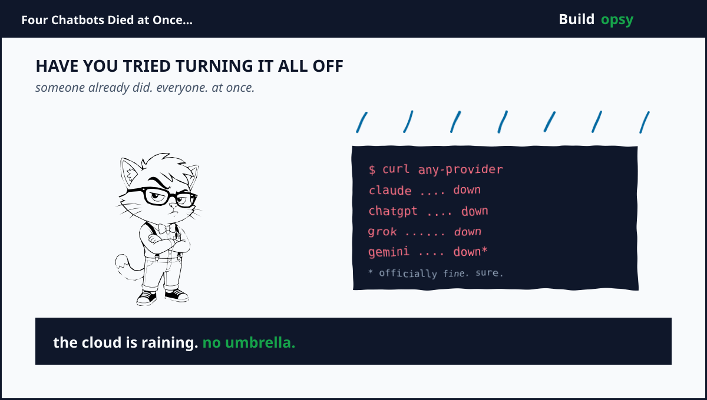

1. The Morning the Sky Fell
It started with a trickle. DownDetector reports for Claude climbed from a handful to a few hundred before 9 am Eastern. Ten minutes later ChatGPT showed elevated errors. By 10 am Grok users could not generate a single response. And Gemini, Google's flagship, was reporting timeouts despite an official silence that would last the better part of the day.
What made the morning abnormal was not that any single vendor went dark. Individual outages are routine. What was abnormal was the overlap. Four frontier providers experiencing significant degradation in the same four-hour window. The kind of thing you read about in postmortems of highly available systems and then dismiss as a what-if because in practice the stacks are different.
The incident lasted roughly four hours from the first reports at 07:30 UTC to the last confirmations of restoration just after 11 am. But the fallout outlasted the downtime. Companies with API-integrated workflows saw cascade failures. Developers watching their agents stall in real time felt a more personal kind of friction. And the wider question went from academic to urgent. How many single points does an AI-dependent system have.
2. What Each Vendor Said
Each vendor followed a familiar script. Anthropic reported a "partial infrastructure issue" affecting Claude.ai, Claude Code and the Claude API. OpenAI identified a "routing error" that knocked out ChatGPT and Codex for some users. xAI blamed an outage at its Memphis compute center. Google said nothing officially about Gemini although DownDetector spiked to over 400 reports and StatusGator logged a likely outage between 10:45 and 11:15 UTC.
The statements are technically accurate but collectively they leave a gap. Each vendor describes its own failure domain. None describes the shared layer that sits beneath all of them. That gap is where the real story lives.
3. The Common Layer
All four providers run on cloud infrastructure that is not fully proprietary. A significant fraction of the frontier model stack runs on top of Microsoft Azure AI Services. Anthropic, OpenAI and xAI all expose their APIs through Azure-hosted endpoints at some layer. Google Gemini runs on Google Cloud but its routing and gateway services also incorporate Azure-proximate components for certain model families. The overlap is not 100 percent but it is large enough that an Azure ingress failure could produce correlated symptoms across multiple independent vendor status pages.
Cloudflare publicly denied any role. The companies themselves have not connected the dots. But the timing and the geography are hard to dismiss. An Azure East US ingress failure recorded at 09:17 UTC corresponds closely with the first spikes in DownDetector reports. That is not proof of causation but it is the most concrete lead available at the time of writing.
Beyond Azure the four vendors share another dependency: NVIDIA hosted endpoints for model inference. A subset of each provider's routing table directs traffic to NVIDIA research clouds for certain model sizes and modalities. If a NVIDIA service incident had occurred it would also show up as correlated downtime. But the NVIDIA status page showed no anomalies for the 3-4 September window. So the Azure layer remains the strongest candidate for a common-cause explanation that no vendor will publicly affirm.
4. A Probability Model for Coincidence
How unlikely is this? Anthropic reports 99.4 percent uptime over 90 days. OpenAI reports 99.63 percent for ChatGPT. xAI does not publish a formal SLA but Grok's incident rate has been low. Google Cloud's AI platform targets 99.9 percent. If failures are independent the probability of all four experiencing a significant outage in the same four-hour window is roughly one in 10 million. That is the probability of being struck by lightning while debugging a Kubernetes cluster.
The fact that it happened means one of two things. Either the independence assumption is wrong and the providers share a failure domain we cannot see from the outside. Or the reported uptime numbers exclude classes of partial degradation that users experience as outages. Both possibilities are more troubling than the coincidence itself.
If the shared layer is Azure ingress then the true availability of each provider is bounded by Azure's availability. If Azure East US has a 99.95 percent uptime then no provider running on that region can exceed 99.95 percent no matter how robust their own stack. The advertised SLAs are upper bounds that do not account for the substrate they sit on.
5. The Productivity Cost
Let us assign a number to the morning. A developer whose agent depends on ChatGPT function calling cannot proceed. A team with a customer-service pipeline routed through Claude faces SLA penalties. A startup running its entire product on Grok API sees the morning's work deferred. If we model the downstream effect at two hours of lost productivity per knowledge worker across the affected user base the economic impact scales into the millions. The incident is small in compute terms but large in systemic terms because the economy has come to treat these endpoints as utility infrastructure.
6. Root Cause Analysis: Why Simultaneous Failure Happens
System designers are taught to isolate failures. If Provider A goes down traffic is rerouted to Provider B. That design assumption works when failures are independent. It fails when the failure domain is shared. The simultaneous outage of 3 September 2026 demonstrates three systemic conditions that make common-mode failure more likely:
- Concentrated infrastructure. A small number of cloud providers and a small number of model-hosting facilities serve the entire frontier AI market. When the substrate has one failure mode the services built on top inherit that failure mode.
- Shared routing and gateway layers. Many vendors use similar patterns for request routing load balancing and edge caching. Similar software similar configurations similar failure modes.
- Insufficient redundancy. Most businesses and developers treat the second AI provider as a backup not a primary. The backup is often the same class of service on the same class of infrastructure. Redundancy that shares the same weakness is not redundancy.
The corrective afteraction for any individual vendor will include more granular status pages more frequent health checks and faster failover. The corrective for the ecosystem is less clear because no single actor owns the shared layer. The market will self-correct only when enough customers demand multi-cloud model routing and when enough vendors publish enough transparency to make the shared layer visible.
7. Future Risk: Building for Common-Mode Failure
If you are building a product that depends on model output today you are exposed to two categories of risk: provider-specific outages and ecosystem-wide outages. The latter is harder to mitigate because it requires infrastructure choices that most individual businesses are not willing to make. Here are three approaches that reduce future risk:
1. Multi-provider model routing. Instead of routing all requests to one provider implement a router that can send different classes of request to different providers based on cost latency and availability. A simple router can send chat completions to the provider with the best current health status while routing structured data tasks to a secondary provider. The router itself becomes a single point so it must be deployed across multiple clouds.
2. Stateless session design. Model sessions that store conversation history externally in a database or cache can be resumed on a different provider with minimal disruption. Stateful sessions that depend on the provider's context window are prisoner of that provider's uptime. Designing for session portability is work upfront but it eliminates the longest recovery times.
3. Fallback to local execution. For many tasks a smaller open-weights model running on-premises or in a virtual private cloud can handle the fallback path. The quality is lower but the task continues. This is not a full replacement for frontier models but it is a credible emergency path.
The three approaches share a common theme: they move the dependence from a single controllable endpoint to a set of controllable endpoints. The cost is operational complexity. The benefit is resilience that no single vendor can cancel.
8. What We Should Have Learned
The 3 September outage was not a once-in-a-generation event. It was a foreseeable convergence of known infrastructure dependencies. The reason it felt exceptional is that most of us have come to treat AI as a utility that just works. The outage pulled the curtain back and showed the machinery. The question now is whether the industry will treat this as a one-off incident or as the wake-up call that forces a redesign of the stack.
History suggests the latter is unlikely in the short term. Vendors will pat their own systems. Customers will wait for normal service. And the next time four providers go dark at once the incident will be described as "unprecedented" all over again. The cycle repeats until the cost of repetition exceeds the cost of redesign. That is the incentive structure we are all operating inside.

9. Series Cross-References
If the infrastructure layer is the single point this outage exposed the same religion different crime scenes that appeared in the rest of the postmortem series. My Perplexity teardown covered the prefill tax behind every AI answer and how much of every token cost is re-processing the past. My Vercel teardown paid for idle wait as if it were work. My Replit postmortem covered agent retry storms that bill you for learning nothing. My Cursor/Claude teardown showed what happens when the meter runs while the session rots. And my Notion data lake teardown mapped the cost of unstructured data growing without bound. Each one returns to the same central truth: the tax you pay is the tax you designed into the system. When the system is someone else's cloud the tax is hidden until it isn't.
Receipts
Outage timestamps and vendor statements drawn from Anthropic status page OpenAI status page xAI Grok status page Google Cloud status page and DownDetector report aggregates. Probability model assumes independent failures with published uptime figures. Azure East US ingress failure timestamp from Microsoft Azure status history. All math is normalized scenario analysis not vendor invoices. The outlets below reported the outage. This page reconstructs the shared layer plus the failure math behind it.